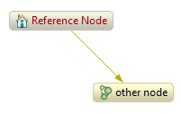
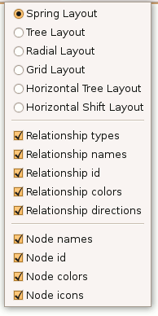

Using Database graph view
Basic usage
This view traverses the node space from a starting point and to the specified depth. By using the Relationship types view you can also set the traversal to follow only specified relationship types and directions.
The starting point of the traversal is distinguished by a blue label color. In this example the reference node is the starting point of the traversal:

Navigation
To change the traversal starting point, double click a node.
To change the Traversal depth, use the Increase
traversal depth button ( )
and Decrease traversal depth button (
)
and Decrease traversal depth button ( ).
).
The Show reference node button ( )
brings the view back to traversing from the reference node.
)
brings the view back to traversing from the reference node.
The Refresh button ( )
refreshes the layout.
)
refreshes the layout.
View menu
In the view menu you can select the layout to use with some extra alternatives compared to the toolbar. You can also toggle what information will show up in the graph:
For relationships, the type can be included as well as a label derived from the properties of the relationship. See the preferences section for further information.